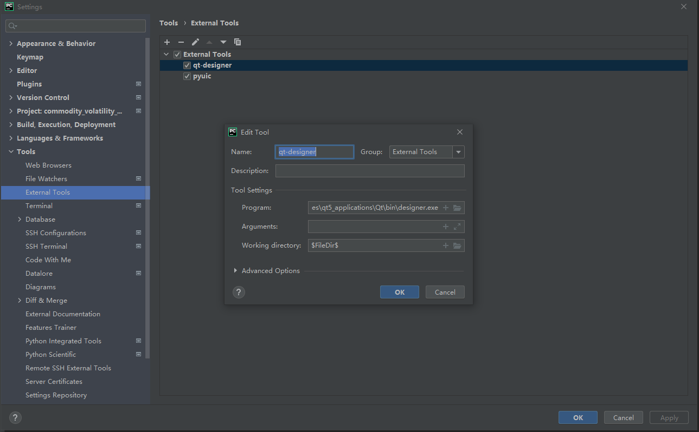
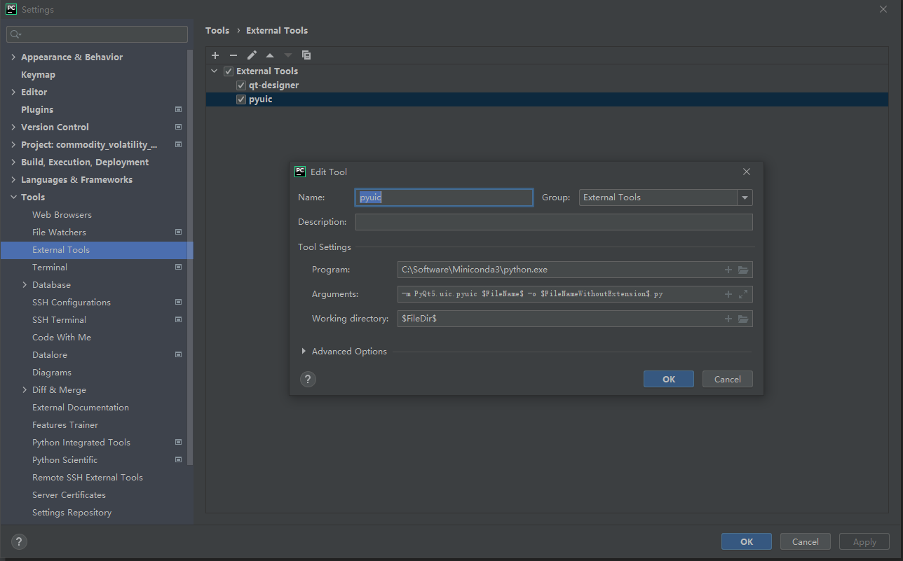
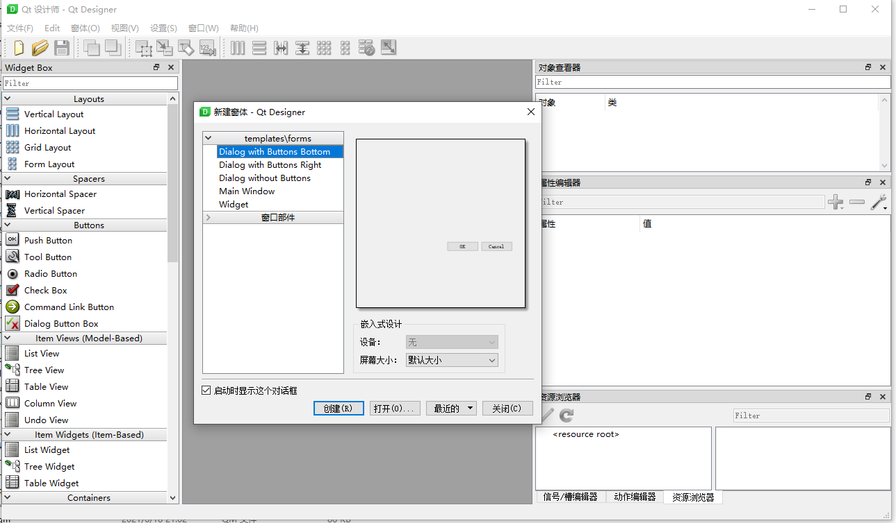
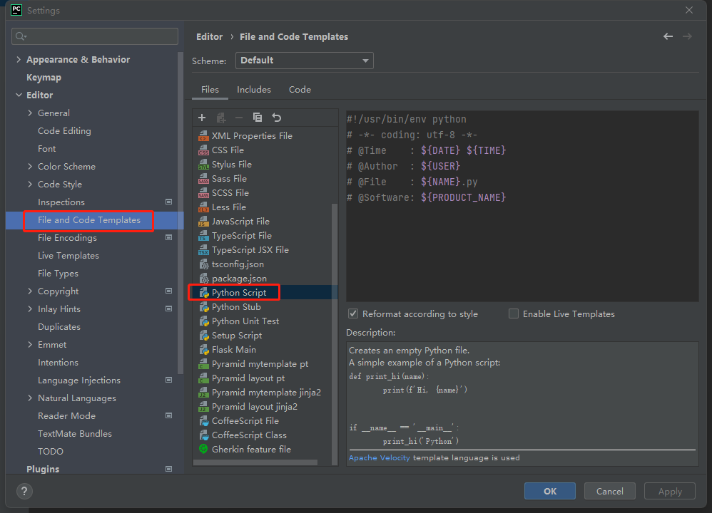
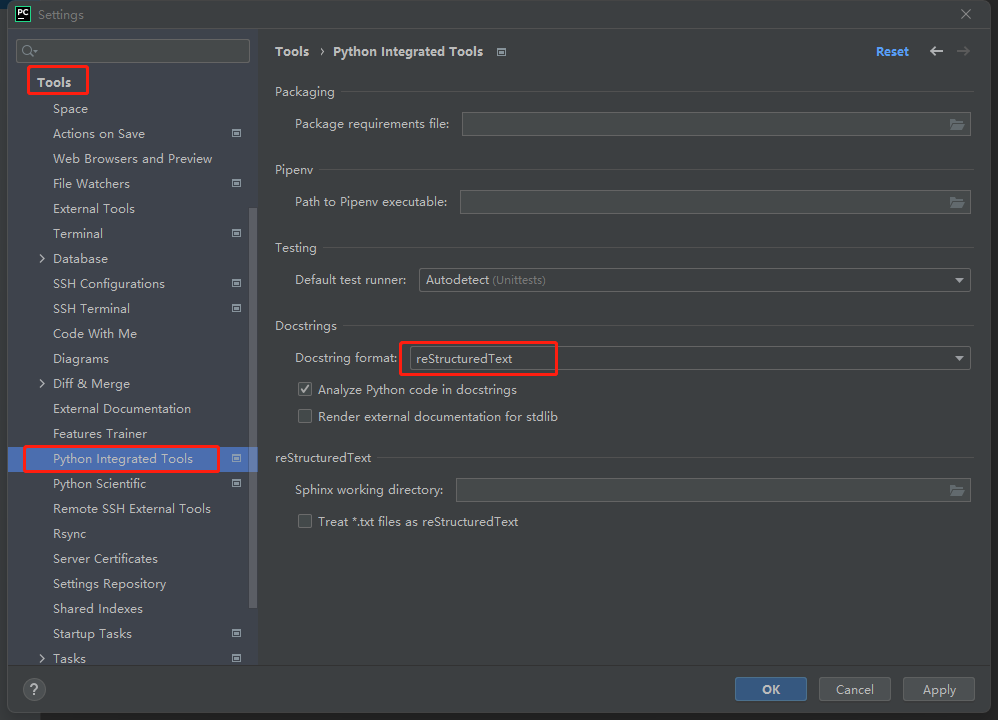

PyQt5
最近升级Python版本发现pyqt5-tools==5.15.4.3.2更换了designer的安装位置到
1 | XX\Miniconda3\Lib\site-packages\qt5_applications\Qt\bin\designer.exe |

然后pyuic的命令也发生变化了
1 | Parameters:-m PyQt5.uic.pyuic $FileName$ -o $FileNameWithoutExtension$.py |

新版本的qt-designer默认汉化了一部分操作界面，操作体验相当不爽了。

在目录XX\Miniconda3\Lib\site-packages\qt5_applications\Qt\translations使用designer_en.qm
替换designer_zh_CN.qm之后可以恢复英文界面。

自动添加文件头注释
文件头模板设置路径
Settings->Editor->File and Code Templates->Python Script

1 | #!/usr/bin/env python |
1 | $ {PROJECT_NAME} - 当前项目的名称。 |
注释风格
在完成函数定义时，输入三个"""回车即可，自动添加函数注释参数。
编写好注释信息后，使用函数时，可以使用如下快捷键查看函数信息：
1
2mac：ctl+J
windows：ctrl+q
Docstring format 修改注释风格
File -> Settings -> Tools -> Python Integrated Tools -> Docstrings -> Docstring format
